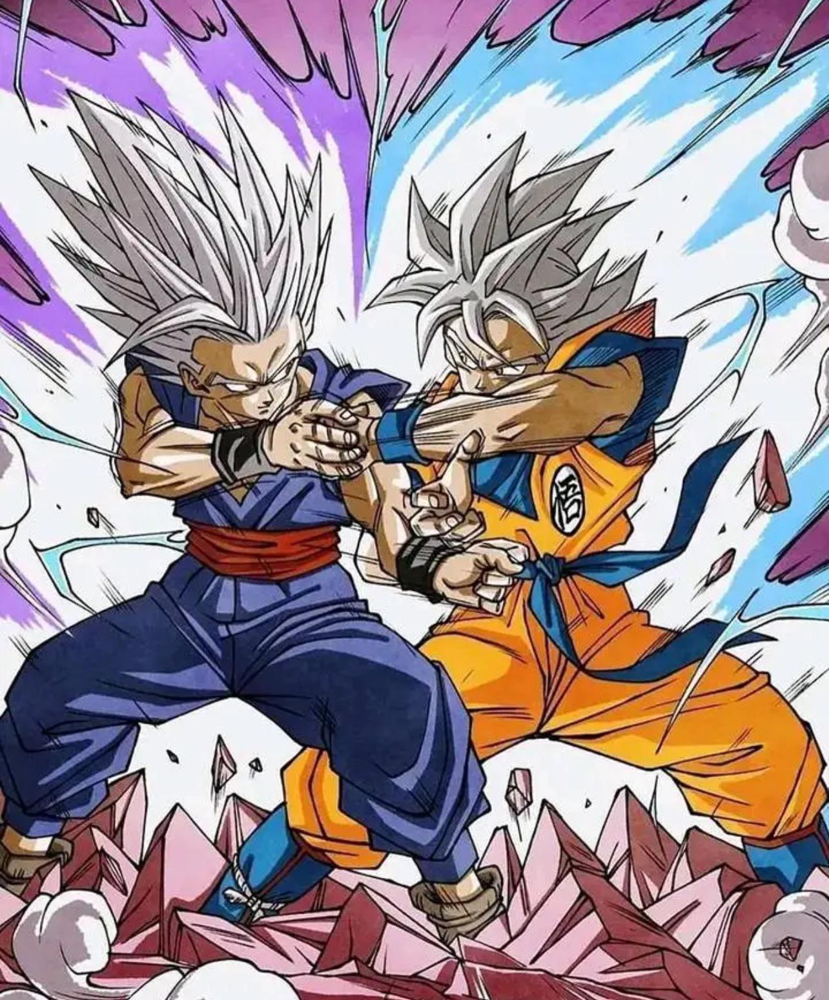

Picture
Favorite conference talk: elder Kearon -- Christ lifts us. We can list others.

Picture Questions
What kind of photos are good to encode using JPEG?
JPEG is good for photos with many colors, such as people, places, and nature.
What kind of photos are good to encode using GIF?
GIF is good for simple pictures, logos, and small animations with fewer colors.
What is unique about the PNG format?
PNG can have a transparent background and keeps good image quality.
How do you resize your photo to the size it should be displayed?
You can resize the photo using photo editing software before putting it on a website.
Why should you resize photos using photo editing software instead of resizing it using CSS?
It can make the website load faster because the image file is already the correct size.